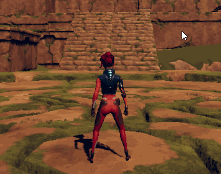
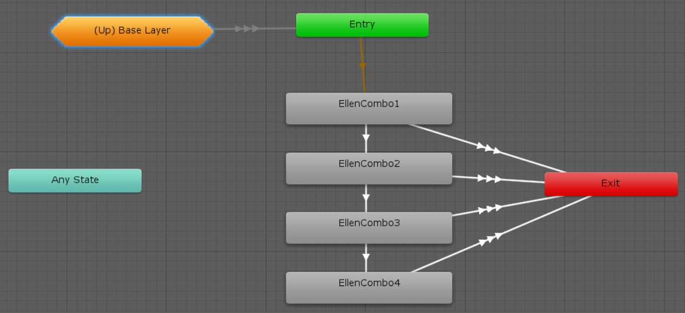

This page is part of the 3D Game Kit example.
Most combat games feature attack combos where performing multiple attacks in quick succession will use various different animations in a sequence which resets to the beginning if you stop attacking or reach the end, which is what we have here:

Mecanim
The Mecanim character's MeleeCombatSM state is a Sub State Machine containing several Attack animations:

 At first glance, the general concept is easy to understand - it will start with the first Attack animation (
At first glance, the general concept is easy to understand - it will start with the first Attack animation (EllenCombo1) and continue to each of the others in order if you keep trying to attack - but as usual, the specific implementation of that logic is scattered all over the place:
PlayerInput.Updatechecks for the attack input in order to start theAttackWaitcoroutine.AttackWaitsetsm_Attack = true;then waits for 0.03 seconds, then sets it back tofalse. This is a dirty hack to ensure that the input doesn't get missed in case there are multipleUpdates in a row without aFixedUpdatebetween them, but otherwise it's an arbitrary amount of time which is too small to have any other use.PlayerController.FixedUpdateresets theMeleeAttacktrigger in the Animator Controller every frame and then sets it if the above input was detected. This means it should just be a bool parameter since the features of a trigger aren't even being used.FixedUpdatealso gets the normalized time of the current state from the Animator Controller and sends it back into theStateTimeparameter.- The Animator Controller uses the
MeleeAttacktrigger to transition into theMeleeCombatSMsub state machine and play the first attack animation (EllenCombo1). FixedUpdatealso callsSetTargetRotationwhich checksif (m_InAttack)in order to turn the player towards a nearby enemy if there is one.- Searching for references to
m_InAttackfinds that the only place it gets set to true is theMeleeAttackStartmethod which has a comment explaining that it is called by an Animation Event. FixedUpdatealso callsPlayAudiowhich plays a sound if one of the attack states was just entered. This is another dirty hack because it does so by checking each of the individual state names (EllenCombo1,EllenCombo2, etc.).- Each of the
EllenCombostates has aStateMachineBehaviourcalledEllenStaffEffectwith anint effectIndexwhich is set in the Inspector. When a state is entered itsOnStateEntermethod gets thePlayerControllerand accesses the effect of their weapon at the specified index in order to callTimeEffect.Activateon it. - That method activates an animated weapon trail and a
Light, then uses a coroutine to wait until the animation finishes to deactivate it. - Each of the
EllenCombostates has various transitions, including one which leads to the next state in the sequence on the conditions thatMeleeAttackis true (meaning the player is trying to attack) and theStateTime(from step #4) is within a certain range.
Note how several of those steps so not directly lead into the next. PlayerInput does not just call a method which you can read to in order to find out what it does, instead it sets a value and you need to check everywhere that references that value to find out what effect it will have. This is a big part of what makes the setup so convoluted.
Animancer
The Animancer character handles all the above logic in the AttackState script which makes the flow of logic far easier to understand:
using Animancer;
using System;
using UnityEngine;
using UnityEngine.Events;
public sealed class AttackState : CreatureState
{
[SerializeField] private float _TurnSpeed = 400;
[SerializeField] private UnityEvent _SetWeaponOwner;
[SerializeField] private UnityEvent _OnStart;
[SerializeField] private UnityEvent _OnEnd;
[SerializeField] private ClipState.Transition[] _Animations;
private int _AttackIndex = int.MaxValue;
private ClipState.Transition _Attack;
private void Awake()
{
_SetWeaponOwner.Invoke();
}
public override bool CanEnterState(CreatureState previousState) => Creature.CharacterController.isGrounded;
private void OnEnable()
{
if (_AttackIndex >= _Animations.Length - 1 ||
_Animations[_AttackIndex].State.Weight == 0)
{
_AttackIndex = 0;
}
else
{
_AttackIndex++;
}
_Attack = _Animations[_AttackIndex];
Creature.Animancer.Play(_Attack);
Creature.ForwardSpeed = 0;
_OnStart.Invoke();
}
private void OnDisable()
{
_OnEnd.Invoke();
}
public override bool FullMovementControl => false;
private void FixedUpdate()
{
if (Creature.CheckMotionState())
return;
Creature.TurnTowards(Creature.Brain.Movement, _TurnSpeed);
}
public override bool CanExitState(CreatureState nextState)
{
return _Attack.State.NormalizedTime >= _Attack.State.Events.NormalizedEndTime;
}
}
Well, not quite all the logic:
Buffered Input
The initial input check is handled by the KeyboardAndMouseBrain script.
It starts with a reference to the Attack state which is assigned in the Inspector.
[SerializeField] private CreatureState _Attack;
Note that this is the only place where the Attack state is actually referenced. The Creature script has references to the core states - Respawn, Idle, Locomotion, and Airborne - but none of them know anything about the ability to attack.
In the Mecanim character, each attack has a window of time during which you could press the attack button to perform the next attack in the combo (step #11 above). These windows were defined in the transition conditions which made them tricky to work with for two main reasons:
- You cannot view more than one at a time and it takes two clicks to swap between them.
- Since the
StateTimeparameter is actually set using the state's normalized time, it is hard to judge how much time a particular value actually represents.
Instead of trying to replicate that setup, the Animancer character instead uses Animancer's Input Buffering system in exactly the same way it was used in the Weapons example.
Fields
Now that we have taken care of getting the character into the AttackState, we can make some Serialized Fields to show in the Inspector:
| Code | Inspector |
|---|---|
In order to interact with the existing systems in the 3D Game Kit Lite (such as killing enemies and breaking destructible boxes) we need to call several methods on its scripts, but the Script Referencing issue prevents us from calling them directly so we use
|
 |
We also need some non-serialized fields to remember the index of the current attack (to play the next one in the sequence when the player attacks repeatedly) and keep a direct reference to that attack for use later on:
private int _AttackIndex = int.MaxValue;
private ClipState.Transition _Attack;
Animations

Expanding the foldout arrow next to each of the Transitions allows us to customise the Fade Duration and End Time of each attack.
Weapon Trails
Whenever we play one of the attack animations, we also want to show a trail of blue light behind the weapon swing. This is handled by the TimeEffect script from the 3D Game Kit Lite which the Script Referencing issue prevents us from using directly. But rather than adding a UnityEvent field as we have in other cases, we can make use of the fact that Transitions already have built in Animancer Events by simply creating an event at time 0 and using its Unity Event to call the TimeEffect.Activate.
In this case the trails are separately animated meshes so if we wanted the ability to tweak the Speed of the attack animation, we would also need to pass that speed onto the trail so it gets shown correctly in relation to the character.
Rather than using a separately animated mesh for the trails, most games generally use Unity's Trail Renderer component (or a custom script that works similarly) to have the trail dynamically follow wherever the weapon goes. This would avoid the speed issue and require less effort to develop, but it does somewhat limit your creative control over the exact appearance of the effect.
Attack Details
The 3D Game Kit Lite uses a very basic damage system where the player kills enemies and destroys objects in one hit and enemies cause the player to lose 1 health on contact. But many games allow different weapons to deal different amounts of damage, knock enemies away, and even cause them to Flinch for different amounts of time. Some games even allow individual attacks with the same weapon to use different stats such as having a sword deal Slashing damage with one attack then Piercing damage with the next or having a weak bash attack followed by a powerful overhead strike.
Associating additional details like that with each animation can be done by creating a class that Inherits from ClipState.Transition, just like how the Root Motion example allows each transition to determine whether it wants to use root motion or not.
Adding More Attacks
Much like if we want to add more idle animations, building this script to use an array makes it much easier to modify the general behaviour and set up any number of animations without needing to set up the same states, transitions, and StateMachineBehaviours every time as you would when using Mecanim.
State Entry
In this example, we only allow attacking while grounded:
public override bool CanEnterState(CreatureState previousState) => Creature.CharacterController.isGrounded;
Games often have different attacks they can use while Airborne as well, which could be achieved by giving this state an Inspector bool to determine whether it is for ground or air attacks and attaching two of them to the same Creature, or by giving it a second array of ClipState.Transitions to use when airborne.
When entering this state, we start by determining which attack in the sequence we are up to. If the previous attack was the last one or it has already fully faded out, we want the first attack, but otherwise we can go to the next one in line:
private void OnEnable()
{
if (_AttackIndex >= _Animations.Length - 1 ||
_Animations[_AttackIndex].State.Weight == 0)
{
_AttackIndex = 0;
}
else
{
_AttackIndex++;
}
Note how we initialised the index to start at int.MaxValue when declaring the field so that the first condition checked by OnEnable is true the first time it is used.
Now that we know which attack is starting, we can play it:
_Attack = _Animations[_AttackIndex];
Animancer.Play(_Attack);
Creature.ForwardSpeed = 0;
_OnStart.Invoke();
}
Updates
While this state is active, we want to apply the raw root motion from the attack animations so we disable FullMovementControl:
public override bool FullMovementControl => false;
This FixedUpdate method is the simplest of any state, we just check the standard transitions (Idle, Locomotion, or Airborne as appropriate) and turn in the direction the Creature.Brain wants to go:
private void FixedUpdate()
{
if (Creature.CheckMotionState())
return;
Creature.TurnTowards(Creature.Brain.Movement, _TurnSpeed);
}
On its own, CheckMotionState would immediately go to a different state, however we want to prevent other actions from interrupting attacks until they are done so we override CanExitState to base its answer on the time of the current attack:
public override bool CanExitState(CreatureState nextState)
{
return _Attack.State.NormalizedTime >= _Attack.EndNormalizedTime;
}
This means that once the specified time passes, the next FixedUpdate will change to one of the standard states (and that state will be responsible for fading in its own animation). If the Input Buffer is attempting to attack again, it will then do so next time it is updated, which will enter this state again. Since the attack animation that just ended would still be fading out at that point, the OnEnable method would then move it onto the next attack in the sequence.
We are using the End Event time to determine when this state is alowed to exit which makes it seem like we could just use an actual event instead of calling Creature.CheckMotionState every frame, but that would not work because:
- If
CanExitStatealways returns false,Creature.CheckMotionStatewill not work because it usesTrySetStateinstead ofForceSetState. - If
CanExitStatealways returns true, it would allow other actions like jumping in the middle of an attack.